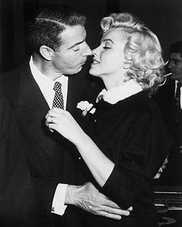
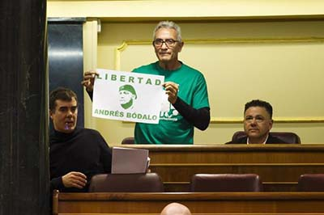
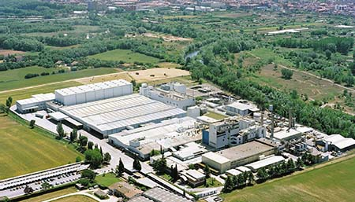

Las confesiones de DiMaggio sobre su relación con Marilyn Monroe
09/05/2017 1:00
Un amigo del exjugador de béisbol recoge en un libro las anécdotas de su matrimonio con la actriz, su enfado con Sinatra y su amor platónico por Elle Macpherson

El diputado Diego Cañamero planta al Supremo para no "participar en un teatro en el que está todo decidido"
08/05/2017 12:00
El diputado de Unidos Podemos Diego Cañamero no ha acudido ante el Tribunal Supremo este mediodía para su declaración voluntaria como investigado por dos delitos, por lo que el tribunal, ante su incomparecencia, tramitará el suplicatorio para actuar contra él, tal y como ha solicitado ya el fiscal.

Nestlé apuesta por Girona para albergar su mayor fábrica de café
05/05/2017 22:00
La multinacional invertirá 38 millones de euros para aumentar la producción hasta las 38.000 toneladas anuale
